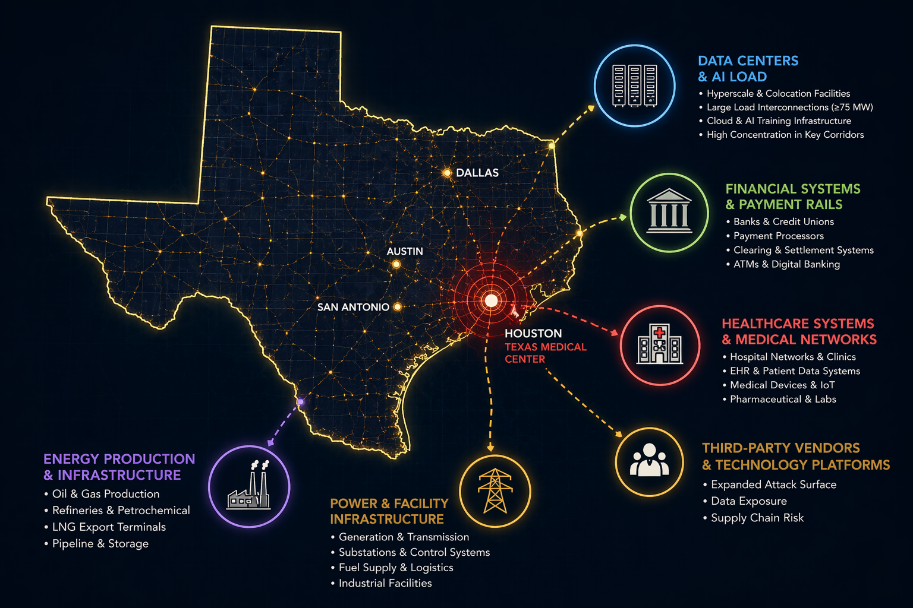

Texas Operating Environment
Texas is the application. Strategic intelligence is the practice.
Texas boards and general counsel face a question that grows more consequential each year: can your organization show it understood adversary intent, geopolitical pressure, sector exposure, and documented action before a cyber crisis forced the decision?

Cascade Intelligence
Texas operates as a coupled system.
Texas controls roughly a quarter of U.S. domestic energy production, hosts the world's largest medical complex, and is home to a growing share of U.S. AI and cloud infrastructure. Disruption here can produce national consequences because the state sits across all of those dependencies at once.
- EnergyERCOT's isolated grid, the Permian Basin, Gulf Coast LNG
- Data Centers & CloudCompute that every other sector rents
- FinancePayment rails, liquidity, shared vendors
- HealthcareClinical availability, clearinghouses, claims
- Defense Industrial BaseJBSA, primes, Tier 2 and Tier 3 suppliers
The point is not that every event follows one fixed chain. It is that executive decisions must account for dependencies outside the organization. Adversaries have mapped this concentration. Most Texas organizations have not.
Sector Pressure
Five sectors. Distinct pressures. One shared environment.
PRC-linked actors, including Volt Typhoon, have been publicly associated with pre-positioning in U.S. infrastructure for potential future disruption. ERCOT's isolated grid, the Permian Basin, and the Gulf Coast remain priority risk environments.
If your business depends on energy, you are operating inside an environment exposed to coercion risk, not just intrusion risk.
Energy & ERCOT Financial services · Identity as the attack surfaceScattered Spider and related clusters show how social engineering can defeat architectures built to stop technical exploits. Dallas, Houston, San Antonio, and Austin form a dense concentration of financial targets.
A damaging financial cyber event can break trust before it breaks systems.
Financial Services Healthcare · Supply chains as pressure pointsIran-linked Handala claimed activity involving Stryker's medical device supply chain in March 2026. The Texas Medical Center serves more than 10 million patients annually, making comparable supplier disruption a national concern.
Organizations do not need to be in a conflict zone to experience spillover from geopolitical disruption.
Healthcare Defense & aerospace · The DIB as an intelligence targetNation-state actors often use weaker points in defense supply chains to reach higher-value programs. San Antonio's ecosystem, including JBSA, NSA Texas, and a dense contractor base, makes smaller organizations potential access pathways.
Being adjacent to national security does not remove risk. It can make an organization a more attractive collection target.
Defense Industrial Base Technology & data centers · Contested AI and cloud terrainTexas is becoming a national AI and cloud infrastructure hub. A compromise of a major hyperscale operator creates simultaneous downstream exposure across every sector. The attack surface for any Texas organization now includes infrastructure it does not own and cannot directly protect, including the power and connectivity that keep compute available.
Cascade Intelligence: Energy, AI & data centersLiberty CTI Key Judgment
Disruption in Texas can produce national consequences.
The state sits across energy, defense, healthcare, finance, and compute dependencies at once. Understanding activity is useful. Understanding intent helps leadership decide whether to act now, monitor, or accept risk.
How our judgments are trackedVolt Typhoon
Pre-positioning risk affecting energy and water infrastructure ahead of a Taiwan contingency.
APT28 / Sandworm
Destructive capability affecting energy, logistics, and financial systems, now confirmed against NATO-member grids.
Handala
Coercive healthcare and medtech supply-chain operations timed to geopolitical pressure cycles.
CyberAv3ngers
Direct targeting of water and operational technology systems with disruptive intent.
Lazarus Group
Financial system targeting and cryptocurrency theft at global scale.
Scattered Lapsus$ Hunters
Social engineering at scale against enterprise identity controls across financial and technology sectors.
The Required Shift
From reactive to anticipatory.
Compliance frameworks and incident response plans are necessary, but internal visibility alone is not sufficient for this environment. Once a risk becomes foreseeable, ignoring it becomes a leadership decision.
| From | To | What it means for leadership |
|---|---|---|
| Reactive risk | Anticipatory intelligence | Understanding the adversary environment before incidents occur, so leadership can act before disruption forces the choice. |
| Compliance standard | Threat-informed posture | Risk decisions grounded in adversary intent, not only internal reporting or compliance frameworks. |
| IT-owned risk | Board-level accountability | Boards and counsel receive documented guidance that connects external risk to governance obligations. |
| Incident response | Strategic warning | Pattern recognition and intent analysis before impact, not only after events become visible. |

See the Texas environment. Then test what it means for your organization.
An Executive Intelligence Baseline maps the outside dependencies your decisions rest on. The Executive Decision Exercise shows how leadership performs when one of them fails.